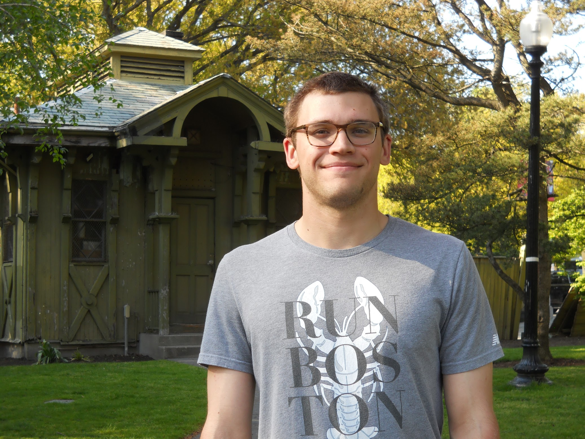

Hello, I’m Brady.
I completed my B.S. in Psychology at the University of Minnesota Twin Cities and now work as a Research Professional in the Sensory Optimization & Neural Implant Coding Lab and the Center for Applied & Translational Sensory Science.
I am applying to PhD programs in hearing science and auditory neuroscience for Fall 2027.
How I got here
I became interested in psychology by wondering how people make sense of the environment immediately around them. For the past several years that interest has settled on hearing — on how physical waves arriving at the eardrum become something meaningful, and on what happens when that process is disrupted by hearing loss or rebuilt with an implant.
What I like about auditory research is that the same question can be asked at very different levels. A treefrog picking a mate out of a chorus and a person following one talker in a crowded room are solving a version of the same problem, and an implant recipient is solving it with a rebuilt front end. I have been lucky to work on all three.
Training & Tools
- Psychophysics, EEG (BioSemi, EEGLAB), and pupillometry (Tobii Pro Spectrum)
- Audiometric threshold testing and stimulus verification with oscilloscope/Picoscope measurement
- Statistical modeling in R and MATLAB: GAMMs, linear mixed-effects, regression
- Human-subjects research under IRB, HIPAA, and GCP; animal research under IACUC protocols
Outside the lab
I swam competitively at Gustavus Adolphus College, spend time outdoors with a camera, and am kept company by two cats. Some of that ends up in the photo galleries.
Curriculum Vitae
For a fuller overview of my experience, training, and publications: